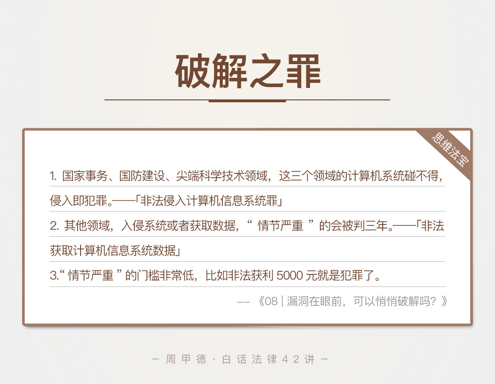

- 00 开篇词 这年头，你真应该懂点法律常识.md.html
- 01 “老周，我想知道” 常见法律认知盲区（一）.md.html
- 02 “老周，我想知道” 律师就在你身边（二）.md.html
- 03 “老周，我想知道” 律师就在你身边（三）.md.html
- 04 “老周，我想知道” 律师就在你身边（四）.md.html
- 05 创业未捷老板跑，社保工资哪里讨？.md.html
- 06 保密还是“卖身”，霸王条款怎么看？.md.html
- 07 编造流言蹭热度？看守所里降温度！.md.html
- 08 合同在手欠款难收，报警有用吗？.md.html
- 09 致创业：谁动了我的股权？.md.html
- 10 又见猝死！工“殇”究竟是不是工伤？.md.html
- 11 期权的“前世今生”.md.html
- 12 裁员面前，你能做的还有什么？.md.html
- 13 抄袭、盗图为什么做不得？.md.html
- 14 加班、工资、休假，你知道多少？.md.html
- 15 受贿原来这么“容易”.md.html
- 16 今天你用“VPN”了吗？.md.html
- 17 漏洞在眼前，可以悄悄破解吗？.md.html
- 18 “爬虫”真的合法吗？.md.html
- 19 非法集资到底是个啥？.md.html
- 20 黄色网站？不仅仅是“黄色”罪名.md.html
- 21 谁修改了我的积分资产？.md.html
- 22 外挂真能大吉大利吗？.md.html
- 23 如何看待“从删库到跑路”？.md.html
- 24 “伪基站”是你的避风港吗？.md.html
- 25 “网络诈骗”真的离你很远吗？.md.html
- 26 智斗中介：“北上广”租房图鉴.md.html
- 27 买买买！买房的“避坑”指南.md.html
- 28 闪婚又闪离，彩礼怎么理？.md.html
- 29 离婚还想和平？你要这么做.md.html
- 30 遗产继承的爱恨情仇.md.html
- 31 骗术升级？假结婚、假离婚的那些事儿.md.html
- 32 孩子学校受伤，谁之过？.md.html
- 33 如何让欠债还钱真正“天经地义”？.md.html
- 34 从透支到盗刷：人人须知的银行卡纠纷.md.html
- 35 远离“套路贷”的套路大全.md.html
- 36 危险！酒驾为什么被罚那么重？.md.html
- 37 老人倒地，“扶”“不服”？.md.html
- 38 “能动手就别吵吵”，代价你真的知道吗？.md.html
- 39 发生交通事故，如何处理？.md.html
- 40 交通事故综合法宝.md.html
- 41 婚姻家庭综合法宝.md.html
- 42 买卖房屋综合法宝.md.html
- 一键直达 法律专栏“食用”指南.md.html
- 加餐 “新冠肺炎”影响下，17个常见法律问题解答.md.html
- 结束语 法律，不会终止的篇章.md.html
- 捐赠
17 漏洞在眼前，可以悄悄破解吗？
网络安全一直是每个IT工程师关注的重点，虽然我对技术了解不多，但是因为系统漏洞造成的网络安全事故，比如用户数据泄露等，倒也听过不少。系统存在漏洞，是技术问题，但如果有人利用了这个漏洞，那可不仅仅是技术的范围了。
前不久某鹅厂23岁安全工程师的新闻，想必你不会陌生。年轻的工程师，因为对酒店的Wi-Fi系统顺手一测，又顺手一发给传播了出去，就被新加坡安全局给抓了。感觉似乎挺冤枉？还真不冤，比如你看这个真实的案例。
小安是一家公司的运维主管，技术也很不错。一次工作中，他发现了公司技术上的漏洞，于是悄悄导出了公司的数据，并在网上出售，最终赚了26万元。
等待小安的是什么呢？钱，要补偿给公司，人，也要蹲大牢，罪名是非法获取计算机信息系统数据罪。为什么小小动作的惩罚会这么严重呢？
老规矩，我们还是先来了解下相关的法律知识。
法律知识
首先我们来看，“非法获取计算机信息系统数据罪”这个罪名。罪名很长，你可以重点先记住前四个字，“非法获取”，跟我们后面讲到的另一个罪名做个区分。
非法获取计算机信息系统数据罪是指违反国家规定，
侵入计算机信息系统，注意这里是指除了国家事务、国防建设、尖端科学技术领域这三点外的其他领域。
或者获取计算机信息系统数据。
并且，符合“情节严重”这一特点的行为。
在这里，我要重点解释几个概念。
首先，这里的“计算机信息系统数据”是指计算机里存储、处理、传输的数据，不仅包括了计算机系统数据和应用程序，还包括了你在计算机里存放的各种个人信息。
但是脱离了计算机存放的数据，比如光盘、U盘中的计算机数据，不适用于这个罪名。比如说，别人copy你的U盘，然后把里面的信息数据转手在网上卖出去，或者是进行其他操作，就不属于这个罪了。
第二，本罪里面的“情节严重”指的是：
获得10组以上的网络金融服务的身份认证信息，包括支付结算、证券交易、期货交易等；
获得500组以上的其他内容的身份认证信息；
非法控制了20台以上的计算机系统；
非法收入达到5000元以上；
造成经济损失达到10000元以上。
以上的五个情节，只要达到了一点，就要追究刑事责任了。通常会被判处三年以下的有期徒刑或者拘役，可能会有罚金。严重点的，可能就是三年到七年的大牢了。
特别注意的是，违法收入只要达到5000元就构成了犯罪，而且即使你没赚钱，只要给公司造成了10000元以上的经济损失也同样构成犯罪。这点钱可真不算多，也可以看出，这个罪名的定罪标准是真的很低，国家的保护很严格，如果不对自己多加约束，一不小心可能就犯罪了。
另外，非法获取计算机信息系统数据罪有明确的范围界定，指的就是我们普通的商业或者工业范围，不包括国家事务、国防建设、尖端科学技术领域这三个领域。那如果你触碰的是这三个领域的计算机系统呢？
一定要特别注意我接下来要讲的，这三个领域万万碰不得！一旦你对国家事务、国防建设或是尖端科学技术领域的计算机做小动作，会犯另一个很严重的罪名，非法侵入计算机信息系统罪。
这个罪名的重点，你也可以记住前四个字，“非法侵入”。“侵入”二字，一听就比“获取”正式、严重得多。事实上也是这样，我们前面所说的非法获取计算机信息系统数据这个罪名，本质上是因为你入侵系统后的其他操作，比如操纵系统、copy或贩卖数据、或者传播等，也就是我们所说的“情节严重”的行为。
而非法侵入计算机信息系统罪不考虑后果，属于行为犯（也就是以某个行为作为判罪的标准），侵入即犯罪！这里的“侵入”，是指没有国家部门的授权或批准，非法获取口令或许可证明后，冒充合法使用者，进入国家系统或者截收数据的行为。有些人甚至把自己的计算机和国家系统联网，同样犯罪。
事实上，如果侵入了这些领域，一般会被处三年以下的有期徒刑或者拘役。
其实这也很容易理解，这些关键领域对于保障国家安全、经济发展、和保护我们普通人的生命财产安全等方面，都十分重要。一旦被入侵，不管你是恶意的破坏分子，还是好奇心作祟，或者只是想单纯地秀技术，这种行为都可能导致重要数据被破坏，或重要、敏感的信息被泄露，带来巨大的灾难。所以，这里必须特殊对待，严厉惩罚。
当然，在实际判案中，一些确实无意识的，或是情节很轻微、没有带来巨大危害的行为，可以不按照犯罪来处罚，但是惩罚还是会有的。所以，遵纪守法在这里，真的就不是说说而已了。
情景分析
经过上面的学习，小安的问题就很容易分析了。即使公司技术有漏洞，也不是小安做坏事的理由啊。而且，公司有没有损失，并不是小安说了算的。这种事情，一旦越界后被公司发现，轻则开除，重的就是刑事犯罪了。
想想我们上面说到的那五个情节，非法收入达到5000元，或是给公司造成损失10000元，就可能被判处三年以下有期徒刑。小安卖数据赚了26万元，显然既得赔钱，又要坐牢。
事实上也是如此，法院最终判决，小安犯非法获取计算机信息系统数据罪，有期徒刑三年，并处罚金10000元人民币。
你看看，权衡一下利弊，其实就是四个字：得不偿失。遇到这种事，我们本应该及时告诉公司，修复漏洞，这对公司来说挽回了一场损失，对你来说，也可能因此得到老板的赏识，获得更好的发展。这也是一个员工的基本职业素养啊！
思维法宝
在工作中，我们可能难免会发现公司的管理漏洞或者是技术开发漏洞，抵挡住诱惑并解决，可能会迎来新的发展；利用漏洞并牟利，估计就会锒铛入狱了。
更何况，现在对犯罪的追究，并不只是你在工作期间被发现的违法行为。即使你在职时的违法事儿没被发现，离职后被公司查到了，你一样会受到法律的制裁。
说了这么多，最后，我来总结一下我们今天的内容。我们主要学习了技术从业者的“两堵墙”，分别是非法获取计算机信息系统数据罪和非法侵入计算机信息系统罪，两个罪名涉及的领域不同，前者也就是“非法获取”这个罪名，强调的是普通领域的侵入和“情节严重”的判定，后者也就是“非法侵入”强调的是三个特殊领域的侵入，并且侵入即犯罪。
两个罪名的判定和后果都不同，但相同的是，判定标准都很低，要特别留心。
- 还是那句话，技术犯法不仅仅是技术问题，更是背后的动机和应用场景问题，而我们要关注的也不仅仅是技术，更要清楚可能触碰到的红线和后果的严重性，才能在意识和行为中建立好防线。
那么对于今天的内容，你还有哪些不清楚的地方或是想了解的吗？或者是你曾经有过触碰红线的危险经历吗？欢迎留言与我分享，记录下你此时的感悟或是问题。也欢迎你转发给身边的技术朋友，给特别的人特别的关爱。
© 2019 - 2023 Liangliang Lee. Powered by gin and hexo-theme-book.